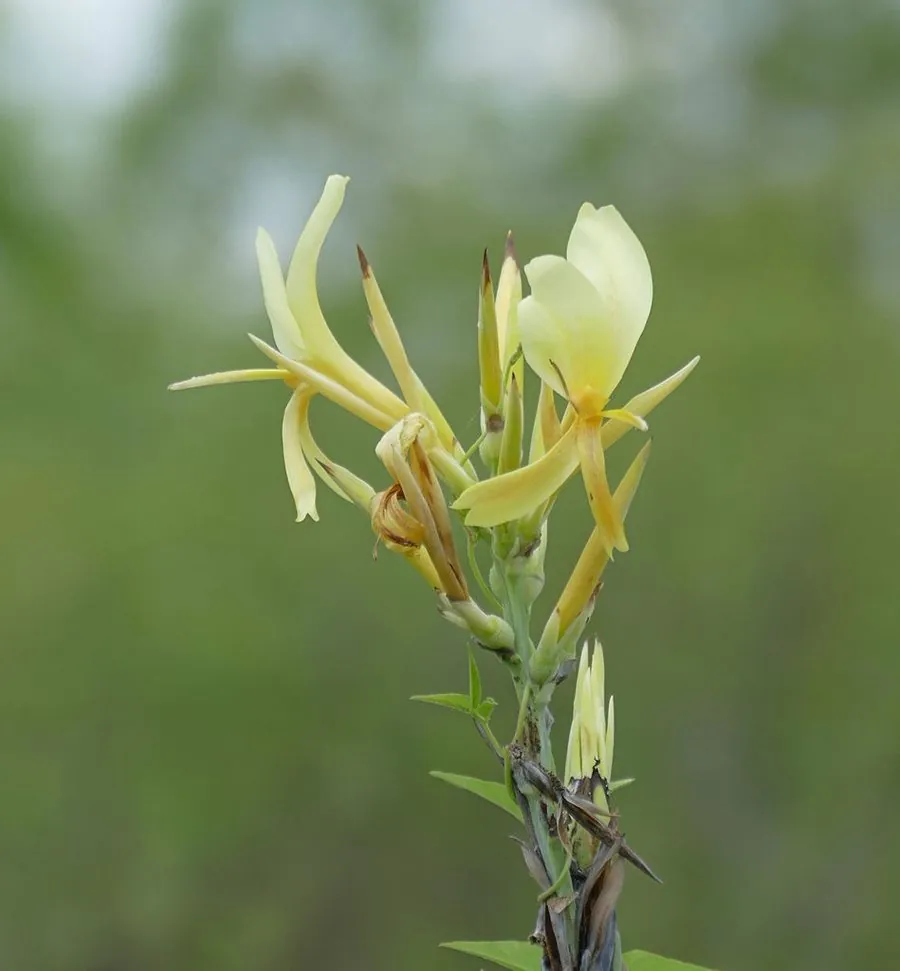

水生植物 · 植物界
水生美人蕉 Canna glauca

美人蕉科美人蕉属多年生水生草本，叶似芭蕉、花橙黄，可生于浅水，是湿地与滨水景观的优良观花植物。
- 分类
- 门被子植物门纲木兰纲目姜目科美人蕉科属美人蕉属
- 栖息环境
- 南美热带的沼泽、浅水与河岸，喜高温、阳光充足
- 地理分布
- 原产南美热带；中国华南、西南及世界温暖地区栽培
- 保护级别
- IUCN 暂无评估；栽培广泛，野生种群未受明显威胁
物种志
水生美人蕉为多年生水生草本，高 1–2 米，具粗壮根状茎，茎直立、粗壮。叶片大，长椭圆形至披针形，长 30–60 厘米，形似芭蕉叶，表面具白粉。总状花序顶生，花橙黄色至淡黄色，花被片 3 枚，退化雄蕊瓣化，形似花瓣，花期长；蒴果球形，成熟时开裂，种子黑色。
本种原产南美洲热带地区，生于沼泽、浅水与河岸，喜高温、阳光充足的环境，在中国华南、西南常作湿地与滨水景观植物。它根系发达、耐水湿，能直接种在 20–40 厘米深的浅水中，是人工湿地净化水质的重要植物。水生美人蕉花大色艳、花期长，也可盆栽观赏；冬季在北方需移入温室，保持根状茎不冻。
形态与习性
- 株高1–2 米，茎直立粗壮
- 花期5–10 月，花橙黄色
- 水深可生于 20–40 厘米深的浅水
- 光照强阳性，需充足直射光
- 水分耐水湿，也可在湿生土壤生长
- 土壤肥沃的塘泥或湿生壤土
- 主要用途湿地景观、水质净化与滨水绿化
趣味知识
- 水生美人蕉可以直接种在浅水里，根系能适应缺氧的湿地环境。
- 它常被用于人工湿地，吸收水中的氮、磷，帮助净化水质。
- 美人蕉看似花瓣的部分其实是瓣化的雄蕊，真正的花瓣并不显眼。
- 水生美人蕉原产南美，比普通美人蕉更耐水湿。